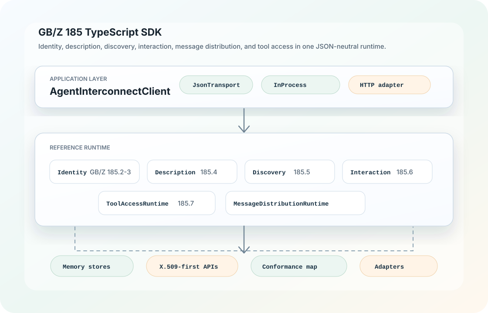

1. Setup
确认 Node.js、pnpm、TypeScript ESM 设置，选择 GitHub 安装、workspace 本地安装或源码开发方式。
进入 Setup
这里就是开发者使用 gbz185-sdk 的主文档入口：从安装、初始化、端到端运行，到每个公开 API、接口、类型和示例，全部可以在网页内直接查到。

确认 Node.js、pnpm、TypeScript ESM 设置，选择 GitHub 安装、workspace 本地安装或源码开发方式。
进入 Setup按身份注册、描述发布、发现、会话、任务、工具调用的顺序跑通完整链路。
进入快速开始每个函数、类、接口、输入输出模型都有签名、用途、入参、返回值和注意事项。
进入 API ReferenceTypeScript SDK 当前为 Beta；Python、Go、Rust、Java SDK 当前为 Alpha 实验中。安装、客户端、传输和工具调用统一放在这里。
进入多语言 SDK| 链路 | 关键 API | 开发者拿它做什么 |
|---|---|---|
| 身份码 | formatIdentityCode, parseIdentityCode, validateIdentityCode |
生成、解析和校验 GB/Z 185.2 结构的智能体身份码。 |
| 身份与凭证 | IdentityRegistryRuntime, CredentialIssuer, CredentialVerifier |
注册身份账户、发行开发凭证、验证过程凭证包、处理锁定和注销。 |
| 描述与发现 | AgentDescriptionRegistry, DiscoveryService |
发布智能体描述，并按名称、自然语言、技能、标签、IO 类型和可用性查找。 |
| 交互与消息 | InteractionRuntime, MessageDistributionRuntime |
创建点对点、群组、混合会话，提交任务，发送分块消息和最终结果。 |
| 工具调用 | ToolRuntime, ToolAccessRuntime |
注册工具、同步工具列表、批量调用工具，并返回成功或失败状态。 |
| 传输适配 | JsonTransport, InProcessJsonTransport, HttpJsonTransport |
用统一 JSON operation 连接本地运行时、HTTP 服务或未来 MCP/WebSocket 适配器。 |
JsonTransport 对接自己的 HTTP、WebSocket、消息队列或网关。